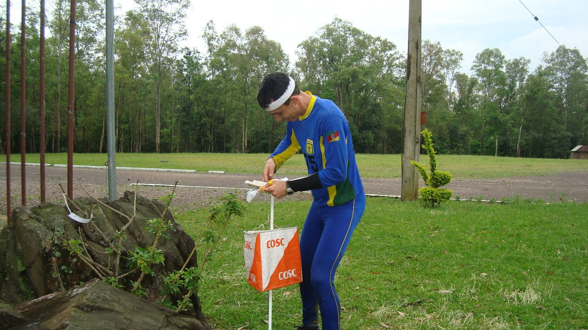
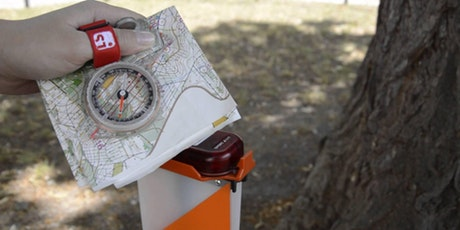
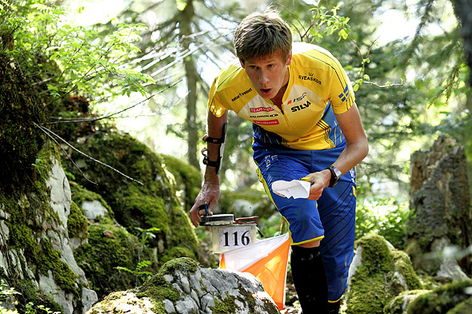
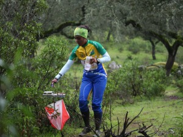

Após o atleta chegar no zero, esse vai ser seu próximo ponto de controle, onde é preciso uma concentração maior, devido ser o início da pista, sabendo que um erro nesse primeiro ponto, pode causar uma desconcentração duranta toda ou grande parte do percurso.
No segundo ponto o atleta já se sente mais confiante e começa a aplicar suas técnicas, abordando o ponto mais rápido que o primeiro, pensando já nopróximo ponto.
Quem pensa que para comandar o Google Glass vai precisar de teclado e mouse, se engana redondamente. O dispositivo vem com vários tipos de sensores e microfones embutidos. Assim, para dar um comando, basta falar ou passar o dedo na lateral do óculos.
O ponto zero é um dos mais importântes na orientação, devido ser o primeiro contato no mapa que você vai saber a sua posição correta. Iniciamos a navegação para toda nossa pista através dele, então, sua localização e tão importante quanto a dos outros pontos seguintes.
